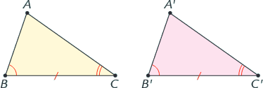

Il primo criterio di congruenza
Definizione 3.3.1. Due figure geometriche si dicono congruenti quando si possono sovrapporre una all’altra, in modo che coincidano punto per punto esattamente, senza essere deformate. □
Per indicare che le due figure A e B sono congruenti, in simboli scriviamo:
A ≌ B
o più comunemente
A = B
Teorema 3.3.2 (Primo criterio di congruenza). Due triangoli sono congruenti se hanno ordinatamente congruenti due lati e l'angolo compreso fra i due lati □.

AB ≌ A'B' BC ≌ B'C', AB̂C ≌ A'B̂'C' ⇒ ABC ≌A'B'C'
Postulato 3.3.3 (Secondo criterio di congruenza). Due triangoli sono congruenti se hanno ordinatamente congruenti un lato e gli angoli a essi adiacenti. □.
BC ≌ B'C', AB̂C ≌ A'B̂'C', , BĈA ≌ B'Ĉ'A' ⇒ ABC ≌A'B'C'
Postulato 3.3.4 (Terzo criterio di congruenza). Due triangoli sono congruenti se hanno i tre lati ordinatamente congruenti. □.
AB ≌ A'B', BC ≌ B'C', , AC ≌ A'C' ⇒ ABC ≌A'B'C'
Attenzione! Negli enunciati dei tre criteri di congruenza è essenziale l’avverbio ordinatamente. Esso indica che i lati congruenti devono essere opposti ad angoli congruenti e gli angoli congruenti a lati congruenti.
I criteri di congruenza dei triangoli rettangoli
Due triangoli rettangolo hanno senz'altro l'angolo retto in comune, pertanto, per stabili se sono congruenti, basta trovare altri due elementi che siano rispettivamente congruenti (e non tre come avviene per i triangoli in generale).
Teorema 3.3.5 (Primo criterio di congruenza tringoli rettangoli). Due triangoli rettangoli sono congruenti se hanno rispettivamente congruenti i due cateti. □.

Teorema 3.3.6 (Secondo criterio di congruenza tringoli rettangoli). Due triangoli rettangoli sono congruenti se hanno congruenti rispettivamente un cateto e un angolo acuto corrispondenti. □.
Teorema 3.3.6 (Terzo criterio di congruenza tringoli rettangoli). Due triangoli rettangoli sono congruenti se hanno congruenti rispettivamente l'ipotenusa e un angolo acuto. □.
Teorema 3.3.5 (Quarto criterio di congruenza tringoli rettangoli). Due triangoli rettangoli sono congruenti se hanno congruenti rispettivamente l'ipotenusa e un cateto. □.
